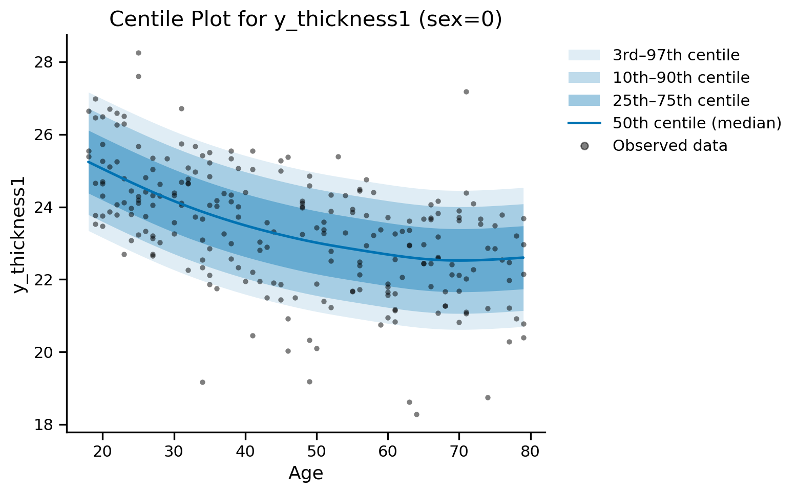
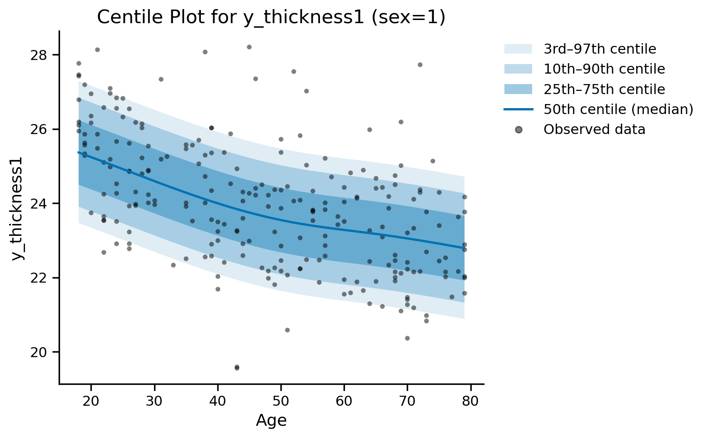

Saving and Loading Models#
Model Persistence#
GAMLSS models can be saved and loaded for later use, enabling reproducible analysis and model deployment across sessions.
gamlss_main.Gamlss.
save_model#
save_model(file_path)
Uses R’s saveRDS function to save the complete GAMLSS model object, including all fitted parameters, formulas, and metadata. The saved model can be loaded in future sessions.
Parameters:
file_path : str
Path where the model will be saved (.rds extension added automatically)
Returns:
None : None
Saves the model to the specified file path
Examples:
import os
from normgamlss.gamlss_main import Gamlss
# Save the fitted model (the folder must exist)
os.makedirs("../../results", exist_ok=True)
gamlss_model.save_model("../../results/my_gamlss_model.rds")
Model saved to ../../results/my_gamlss_model.rds
gamlss_main.Gamlss.
load_model (class method)#
load_model(file_path)
Loads a previously saved GAMLSS model using R’s readRDS function. Automatically extracts model metadata including variable names and formulas to recreate the Python wrapper.
Parameters:
file_path : str
Path to the saved model file
Returns:
model : Gamlss
New Gamlss instance with the loaded model
Examples:
# Load a previously saved model
loaded_model = Gamlss.load_model("../../results/my_gamlss_model.rds")
Model 'model_shash_2' loaded from ../../results/my_gamlss_model.rds
# Verify the loaded model works
z_scores = loaded_model.z_score(df_test, df_train)
print('Loaded model Z-scores:', z_scores[:5])
Loaded model Z-scores: [ 0.16719671 3.25534027 -1.32695918 0.78290266 1.13964224]
gamlss_main.Gamlss.
export_slim#
export_slim(train_data, file_path, grid_step=0.01)
Writes a slim, data-free copy of the model. Load it with load_model(): it loads as '<model_name>_slim', next to the full model if that is loaded too.
Parameters:
train_data : pandas.DataFrame
The data the model was fitted on (used for the export and its self-check; none of it is stored)
file_path : str
Where to write the slim model (.rds extension added automatically)
grid_step : float, default=0.01
Spacing of the grid on which the smooth curves are stored (in units of the continuous variable, e.g. years)
Returns:
check : dict
Self-check: for each parameter, the largest difference between the rebuilt and the fitted linear predictor on the training rows
Examples:
# Write a slim copy, once, with the data the model was fitted on
check = gamlss_model.export_slim(df_train, "../../results/my_gamlss_model_slim.rds")
print('Self-check (largest difference per parameter):', check)
Self-check (largest difference per parameter): {'mu': 6.394884621840902e-13, 'sigma': 4.263256414560601e-14, 'nu': 1.3367085216486885e-13, 'tau': 5.071498776487715e-13}
# Load the slim copy and use it WITHOUT the training data (train_data=None)
slim_model = Gamlss.load_model("../../results/my_gamlss_model_slim.rds")
z_slim = slim_model.z_score(df_test, None)
z_full = gamlss_model.z_score(df_test, df_train)
print('Slim model Z-scores:', z_slim[:5])
print('Largest difference from the full model:', np.max(np.abs(z_slim - z_full)))
Model 'model_shash_slim' loaded from ../../results/my_gamlss_model_slim.rds
Slim model Z-scores: [ 0.16719627 3.25533195 -1.3269772 0.78291461 1.13963571]
Largest difference from the full model: 0.0001287406076357911
# Plots work the same way
slim_model.plot_centiles(df_test, None, centiles=[3, 10, 25, 50, 75, 90, 97],
variables_to_split={'sex': [0, 1]}, additional_global_vars={'site': 'HJDXM'},
x_axis={'age': 'Age'}, plot_scatter=True, figsize=(8, 5));
site: user specified = HJDXM

Values used for centile calculation in this plot:
sex: 0
site: HJDXM
Scatter data filtered by:
variables_to_split:
sex: 0

Values used for centile calculation in this plot:
sex: 1
site: HJDXM
Scatter data filtered by:
variables_to_split:
sex: 1